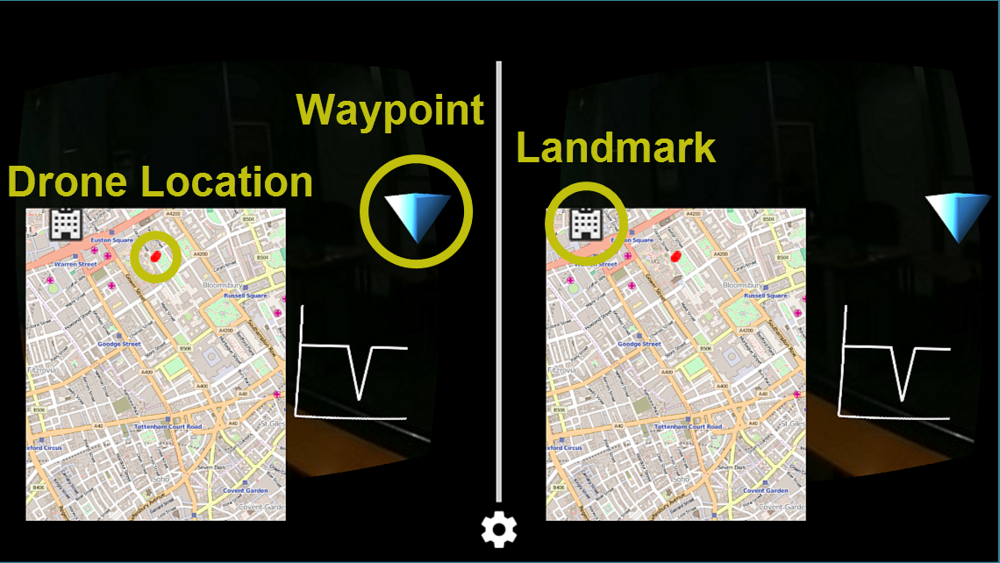
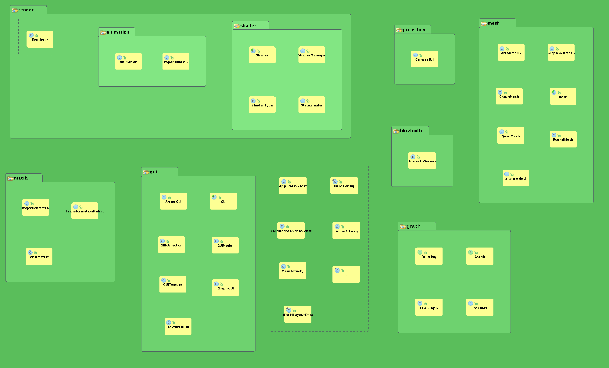

Google meets Medecins Sans Frontieres: An augmented reality experience for data collection on the field.
System Implementation
Java
Our system is developed in Java because it is the native programming language for Android, our primary Operating System. It includes strong libraries relating to OpenGL, the Open Graphics Library used for the design of the user interface.
Hardware
Drone
The DJI Phantom 3 is the drone we are using for our project. The motivation for this choice was its size: while still being easy to carry, it is robust and large enough to attach the sensors, gimbal, camera, and server system. We initially intended to build our own drone, as the DJI Phantom is not open source, to be able to make use of the drone’s existing data processor and communication devices for the sensors; however the Phantom turned out to be suitable for our needs and provided all the features we required.
Sensors
For data gathering in the drone’s surroundings whilst in flight, we have a temperature and a humidity sensor (Arduino Compatible Digital Temperature Humidity Sensor Module). To be able to stream the data from the drone to the ground, the drone and the back-end (portable computer) are linked with a Jeelink (v3c) and Jeenode USB system. This telemetry installation sends sensor data to the server, which is transfered to the phone via bluetooth.
Camera and Gimbal
For capturing video we are making use of a ____ camera and _____ as a video transmitter and receiver.

Connectivity
As we needed to connect three devices together, connectivity was a key part of the project. After revising the connections between the drone, laptop and cardboard device, we decided the best way we can connect the devices will be through a device called a telemetry which uses high range radio waves to transmit the data from the drone to a laptop and then using bluetooth to transmit the data from the laptop to the cardboard device. These decisions came through as the Wi-Fi range was too short to connect the drone and laptop and Android does not support ad-hoc Wi-Fi networks.
Telemetry
Bluetooth
User Interface Implementation
Having received both Google’s specification and the requirements of MSF, we concluded that we would need to have a User Interface (UI) which is easy to use with the Google Cardboard and makes use of its potential 3D virtual reality creation, whilst, at the same time, is able to display video content.

Google Cardboard
The Google Cardboard is a practical, hand-held device that creates an augmented reality environment for the user. Because of it’s compact size and light weight, the Cardboard is a better alternative to a laptop or a tablet as it allows the medics to set up faster with less equipment.
Map
A map was implemented with OSM-droid, which is an Android library for rendering OpenStreetMap (OSM) style map views. The reason for using this instead of the traditional Android map view is that our client uses an OSM formatted database. The map renders the current location of the drone by providing GPS coordinates. The map is designed to recenter on the drone at a 10 second interval, and at each interval a new marker is rendered. This is done so that throughout the flight a path will be traced on the map, and after the operation the users have this information and can reflect back on it if they need. There are also markers rendering points of interest from the database, it is displaying all the landmarks located within a 3 kilometer radius of the drone. With the Cardboard, the user can click on a marker to see its tag and description.
Landmark Waypoints
The video markers in the application were implemented by firstly creating an OBJ file parser which allows for the loading of 3D model which have been created in external applications such as Blender or Maya. By creating this parser we can easily load any new model to other parts of the system. Once the model for the marker is loaded its position is calculated based on the GPS coordinates of both the drone and the landmark and then displayed in the Cardboard allowing the user to see where the landmark is. The last aspect of developing the landmark feature is to light the arrows so that it is easier for the user to see where they are pointing at. This was done using simple dot product lighting.
Graphs
The software we used for representing graphs is OpenGL ES. Using the data collected from the sensors, the coordinates are plotted on a 2D graph that can be extended to a 3D model. After research into HTML and JavaScript rendering in an OpenGL ES environment, we concluded that creating the graphs with OpenGL ES itself was the most effective method. Components that are included are a constant graph update, so as new data is incoming the new points are represented on the graph.
System Architecture
The Android Cardboard Application Architecture
Design Patterns

Singleton
Several classes are Singletons; for example, the Renderer. This allows us to have a reference to certain important objects, whilst enforcing that these objects are created only once.
These Singletons are implemented via the normal Java recommended method; by creating a single instance value in an enumeration. This method creates eager Singletons.

Factory
We use a Factory to create Packet objects. This allows us to create different types of objects based upon a property. The alternative, using a switch-case statement, can be quite tedious and untidy. It also hides any unsightly implementation details.

Null Object
Null Objects are used in our project in order to represent an object with no value. This provides a cleaner way of representing null objects and allows us to add some implementation to these objects, which may be more useful in certain cases.

Observer
We take advantage of the Observer design pattern in order to notify certain objects of an event. GUI objects, for instance, are told whether the Google Cardboard’s trigger is pulled. This allows different actions to occur depending on the event.

Prototype
The Prototype design pattern allows the creation of a new object based upon another prototypical object. In our project, we use this pattern in conjunction with the Factory in order to create Packet objects. Each packet is created by reflectively calling its constructor, based upon its class. Since we define packets without parameters in the constructor, no other information but the class is required.

Bridge
The Bridge design pattern separates abstractions and implementations from each other, and instead provides a ‘bridge’ between the two. In our application, we make use of a Drawable interfaces, allowing anything that implements to have a draw function. The GUI class provides the basic implementation of this function, and subclasses are free to make use or override this as they wish.

Iterator
The Iterator design pattern allows us to iterate over a collection of objects easily. In our project, the GUICollection represents a collection of GUI objects. This is particularly useful, as the collection provides functions that easily allow addition of objects, removal of objects, and, importantly for our project, sorting of objects in a certain way.

Command
In order to better represent the networking system, we encapsulate bytes as a Packet class. This is a simple way of representing the Command design pattern, as each type of packet is a request for its information to be sent.

Chain of Responsibility
The Chain of Responsibility is a sequence of executions which link the call of a function to its eventual implementation. One basic example of this in our project is the drawing sequence; successive Drawable objects are drawn, and progress further into the ‘branches’ of the ‘tree’. This allows us to simplifying the implementations required for drawing, instead of it being more of a mess if it were all in one class.

Template Method
Several base classes, such as the GUI class, have template methods, and their subclasses implement the feature required. This is especially useful for similar objects, allowing other classes to call the function without need of how it is implemented.
Diagrams from http://www.oodesign.com/